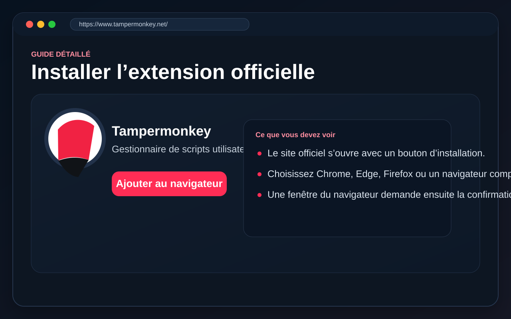
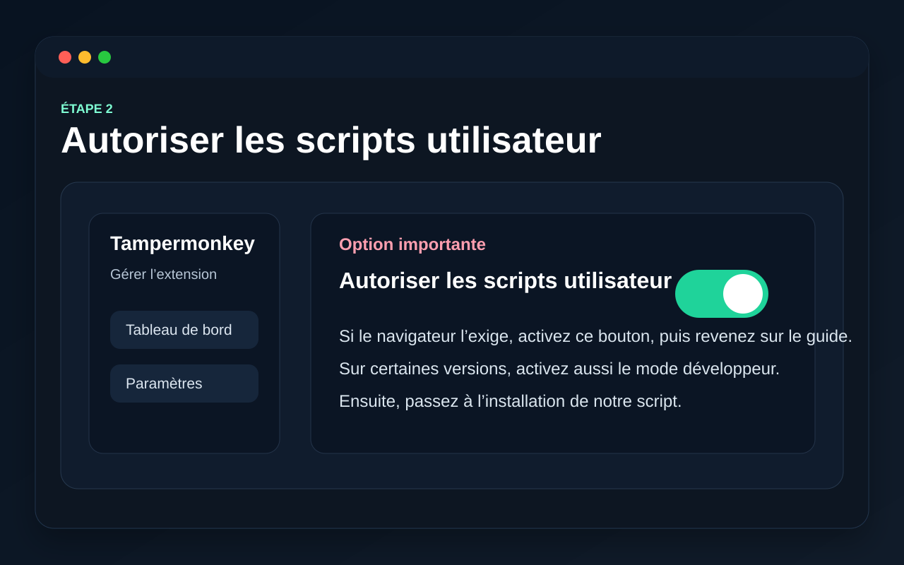
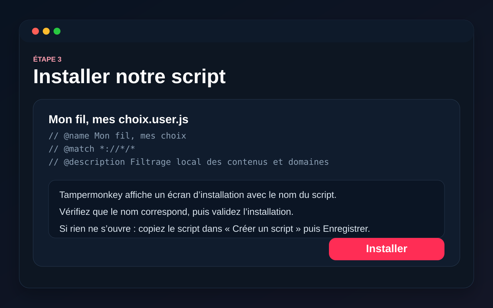
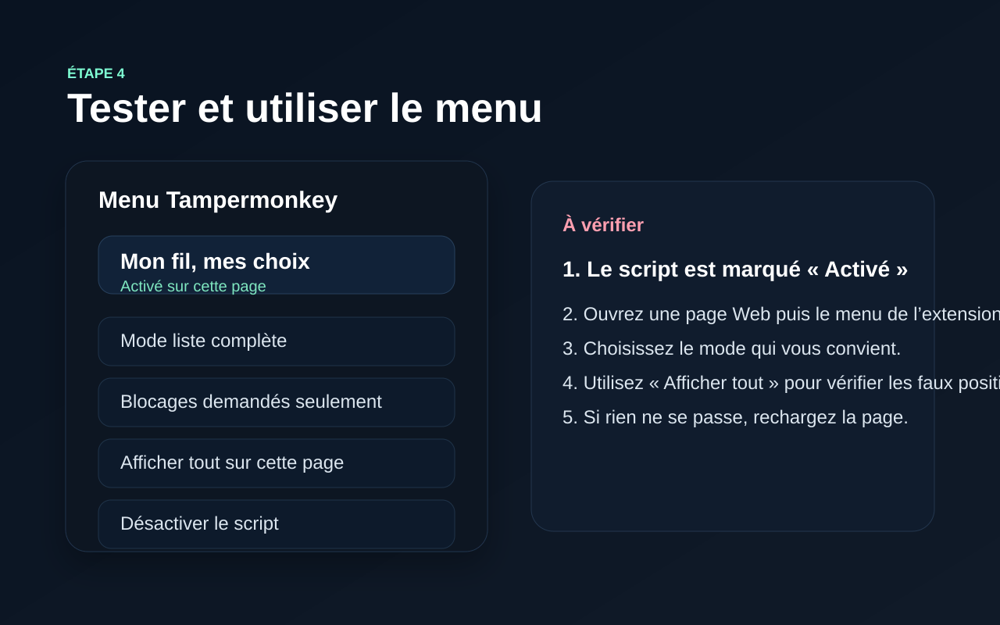

Ce qu’il vous faut
Un navigateur compatible avec Tampermonkey sur ordinateur. Sur téléphone, la compatibilité dépend du navigateur utilisé.
Ce guide a été pensé pour les personnes qui ne connaissent pas encore les scripts utilisateur. Vous y trouverez les étapes dans le bon ordre, des captures d’écran illustratives et des solutions si quelque chose ne fonctionne pas.
Un navigateur compatible avec Tampermonkey sur ordinateur. Sur téléphone, la compatibilité dépend du navigateur utilisé.
Le script masque localement des résultats, cartes ou publications sur certains sites compatibles. Il ne supprime rien à la source.
Si un site change de structure, il peut falloir mettre le script à jour. Vous pouvez aussi désactiver le filtre à tout moment.
Ce parcours est prévu si Tampermonkey affiche encore « New Userscript » sur votre téléphone. Les visuels sont des illustrations annotées, inspirées de l'interface mobile : les boutons exacts peuvent varier selon votre navigateur et sa version.
Dans Tampermonkey, touchez la ligne « Éditer » sous le script créé par défaut.

Dans l'éditeur, sélectionnez tout le code par défaut puis supprimez-le. N'en gardez aucune ligne.

Revenez sur notre site, utilisez « Copier le script », puis collez son contenu dans l'éditeur Tampermonkey et utilisez l'icône de sauvegarde. Ne recopiez pas le faux code présent dans l'illustration.

Le script doit s'appeler « Mon fil, mes choix — filtre Web personnel » et être activé. Revenez sur Google, rechargez la page et ouvrez « Gérer les groupes (9) ».

Chaque étape ci-dessous montre ce que vous devez faire et ce que vous devriez voir à l’écran. Les captures sont illustratives, pour vous aider à vous repérer plus facilement.
Commencez toujours par l’extension officielle Tampermonkey. Sans elle, le script ne pourra pas s’installer ni fonctionner.

Certains navigateurs demandent une autorisation supplémentaire pour que les scripts utilisateur fonctionnent correctement.

Une fois l’extension prête, ouvrez notre script. Tampermonkey affichera normalement une page d’installation. Sur téléphone, si vous voyez « New Userscript » comme sur votre capture, utilisez plutôt le bouton de copie ci-dessous.
Appuyez pour copier le code complet. Il ne faut pas copier seulement le lien.
Si la copie automatique est bloquée : sélectionnez le texte ci-dessous et choisissez « Copier » dans le menu du téléphone.

Après installation, ouvrez une page Web puis le menu Tampermonkey. Le script doit apparaître comme activé.

La V12 contient les 303 entrées de la liste, réparties en 9 groupes indépendants. Tous les groupes sont actifs lors de la première installation.
Exemple : si vous désactivez le groupe « Médias et groupes de presse », CNews ne sera plus masqué par notre script. Pour le masquer, réactivez ce groupe.
Vérifiez d’abord que l’extension Tampermonkey est bien installée. Ensuite, retournez sur le lien du script. Si le navigateur l’ouvre comme un simple texte, copiez le contenu dans « Tableau de bord → Créer un script », puis enregistrez.
Selon le navigateur, cette option peut ne pas être visible. Si elle n’apparaît pas, vérifiez le mode développeur ou consultez la documentation officielle de Tampermonkey pour votre navigateur.
Rechargez la page Web. Ouvrez ensuite le menu Tampermonkey pour vérifier que le script est activé sur cette page. Certains sites peuvent aussi être moins compatibles que d’autres.
Vous pouvez désactiver le script depuis le menu Tampermonkey, ou le supprimer complètement depuis le tableau de bord de l’extension.